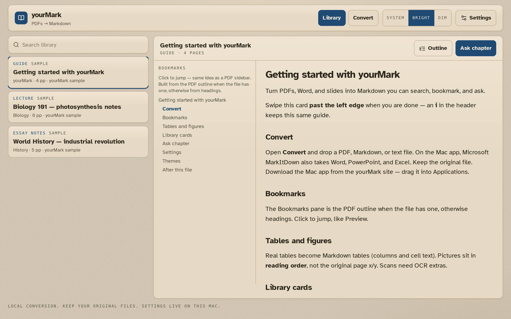
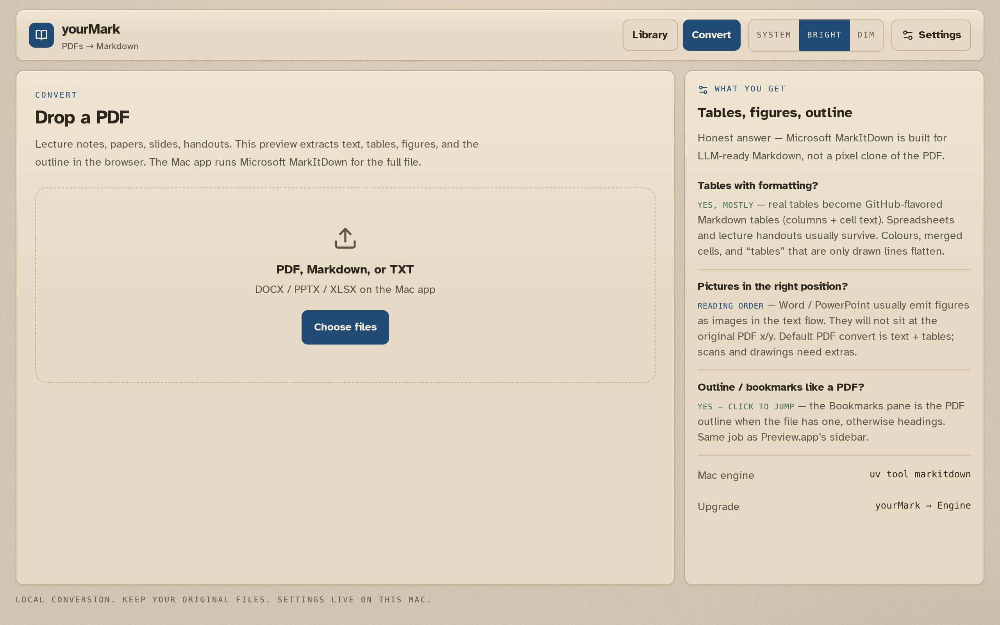
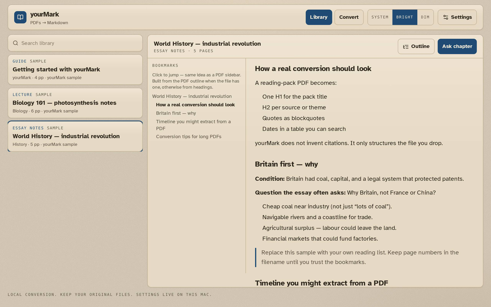
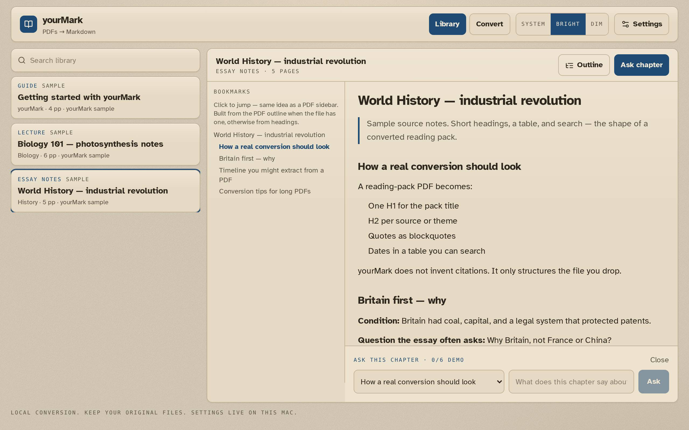
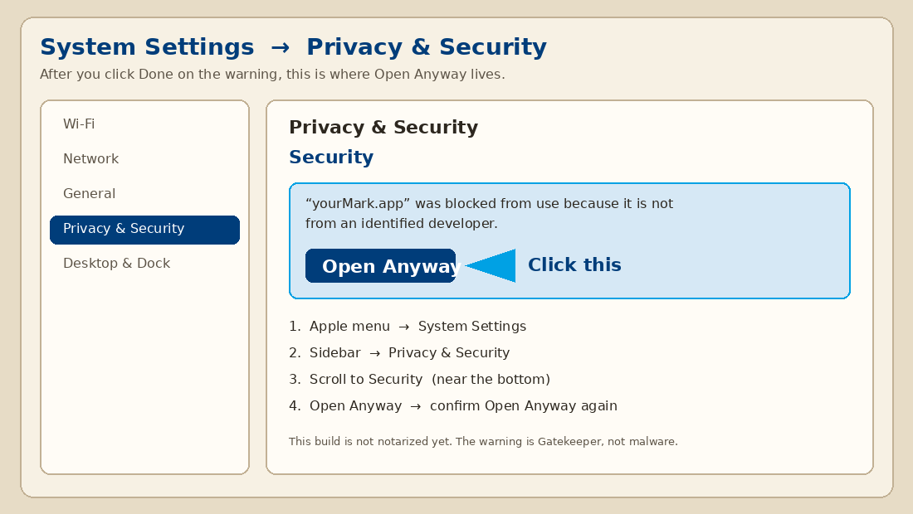

yourMark
A simple Mac window in front of Microsoft MarkItDown. Drop a PDF (or Word, slides, a spreadsheet). Get Markdown you can search, bookmark, and ask — on this computer, not in the cloud.
Open the disk and drag yourMark onto Applications (follow the arrow). If macOS says the app is not opened: click Done, then double-click Privacy & Security Settings on the disk → Open Anyway.

What this is
Students, notes, research papers, handbooks — anything you would rather search than scroll. yourMark is the place you drop the file. It is not the converter itself.
The conversion is Microsoft MarkItDown, an open-source tool (MIT). yourMark finds that program on your Mac, runs it locally, then shows the result: outline, tables, pictures in reading order, and Ask a chapter.



Install (no Terminal)
- Download the disk image.
- Drag yourMark onto Applications (follow the arrow).
- If macOS says it could not verify the app, click Done (not Move to Bin). Then Apple menu → System Settings → Privacy & Security → scroll to Security → Open Anyway.
- First launch installs Microsoft MarkItDown itself (needs the internet once).

Homebrew or Terminal (optional)
Only if you already live in a terminal:
brew tap Burbank/yourMark brew install --cask yourmark uv tool install 'markitdown[all]'
git clone https://github.com/Burbank/yourMark.git cd yourMark && ./Scripts/Install.command
Credit — what the code actually does
yourMark is a placeholder GUI.
It does not contain Microsoft’s converter and it does not reimplement it.
When you convert a file, yourMark shells out to
markitdown
on this Mac. Tables and most of the Markdown come from that engine.
Pictures in a digital PDF are pulled into a figures folder next to the
Markdown after convert — MarkItDown itself does not keep PDF images.
If Microsoft ships a new release, use Upgrade Engine in the app
(or uv tool upgrade markitdown) — you get their update, not a fork.
yourMark adds: the window, library, bookmarks from the PDF outline, pictures from the PDF, drag-and-drop, and Ask (your key, your provider). Keep the original PDF. Markdown is for search and questions.
MarkItDown is MIT, by Microsoft. yourMark is MIT, by Burbank.